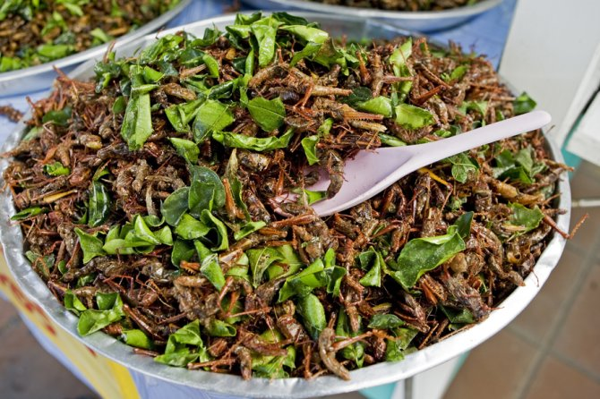
Insects: Rich in protein, insects like crickets and mealworms are consumed in many cultures worldwide.

Barley Coffee Beans: Roasted barley grains can be ground and brewed to create a coffee-like beverage with a mild flavor and a hint of sweetness.
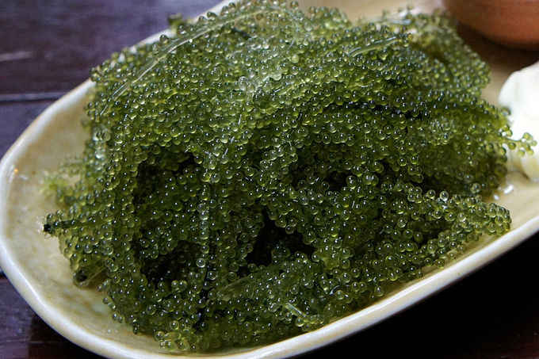
Algae: Spirulina and chlorella are examples of algae that are high in nutrients and can be consumed as supplements or incorporated into foods.

Lab Grown Meat: Cultured meat produced in laboratories offers a more sustainable alternative to traditional livestock farming.
Plant Based Meat: Products like tofu, tempeh, and seitan mimic the taste and texture of meat without using animal products.
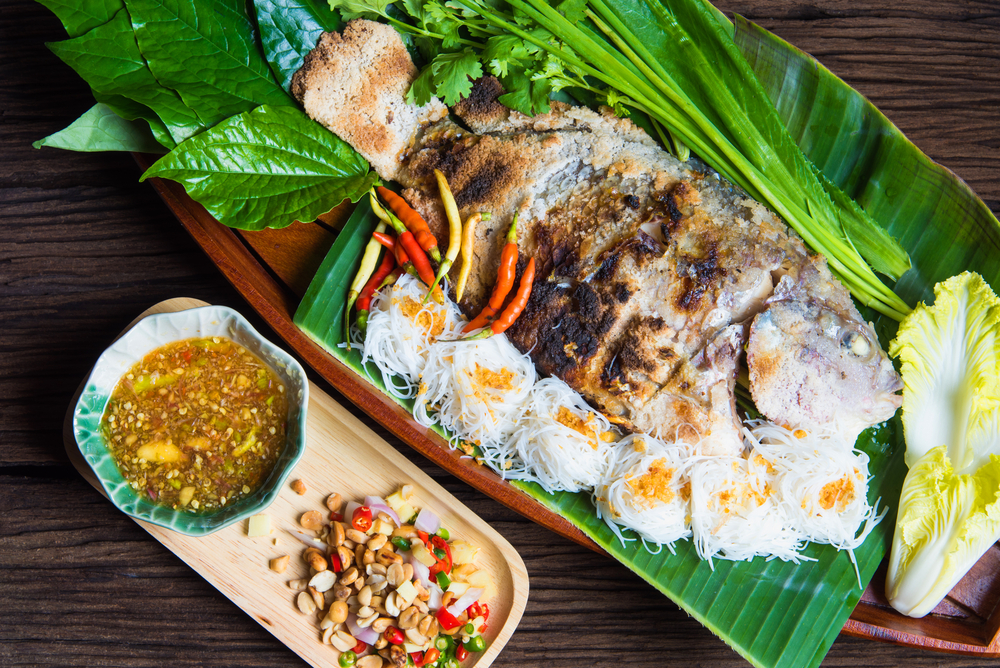
Aquaponics: Combining aquaculture (fish farming) with hydroponics (growing plants in water), aquaponic systems can produce both fish and vegetables.
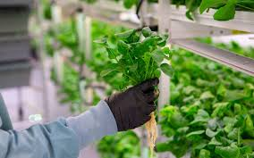
Hydroponics: Growing plants without soil, hydroponic systems can be used to cultivate a variety of vegetables and herbs.

Vertical Farming: Utilizing vertical space in urban environments, vertical farms can produce food efficiently in limited areas.
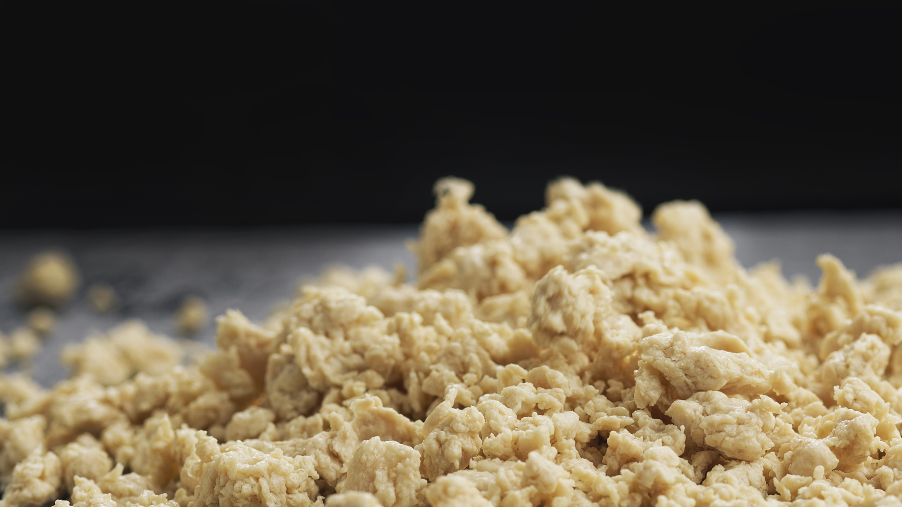
Mycoprotien: A protein-rich food source derived from fungi, mycoprotein is used in products like Quorn.
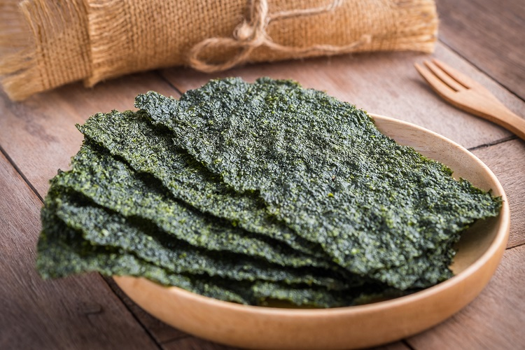
Edible Seaweed: Seaweed is a nutritious food source that can be consumed in various forms, such as snacks or added to dishes.

Eible Insects: Farms dedicated to breeding insects for human consumption offer a sustainable protein source.
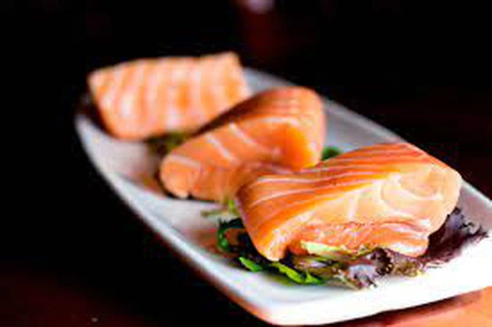
Lab Grown Fish: Similar to lab-grown meat, fish can be produced in laboratories without the need for traditional fishing practices.
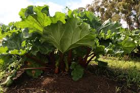
Perennial Crops: Plants like certain varieties of grains and fruits that require less maintenance and can provide food over multiple years.
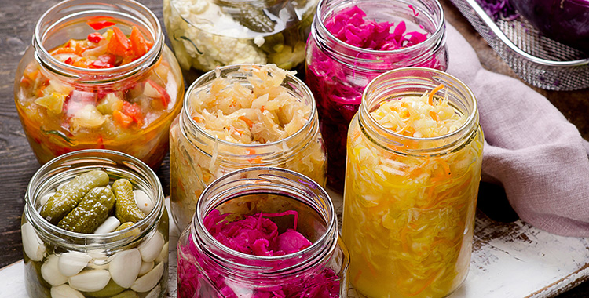
Fermented Foods: Foods like kimchi, kombucha, and kefir are rich in probiotics and can be made at home or purchased.

Hybrid Foods: Crossbreeding different plant varieties to create hybrids that are more resilient to environmental conditions or pests.
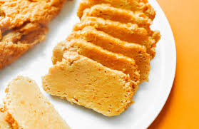
Seitan: Also known as wheat gluten, seitan is a high-protein meat substitute made from gluten, the main protein in wheat. It has a chewy texture and can be flavored and seasoned in various ways.
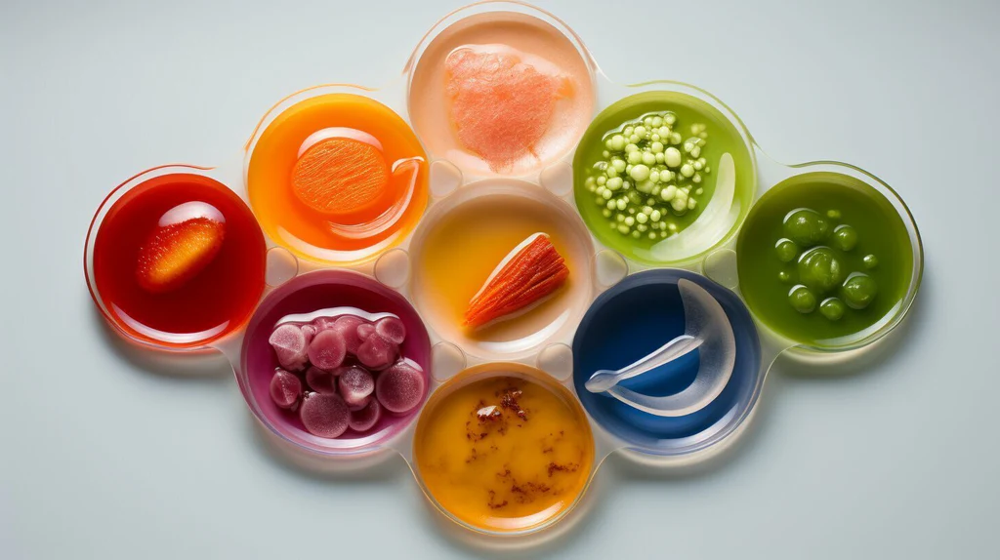
Hydrocolloids: Hydrocolloids like agar-agar and carrageenan, derived from seaweed, are used as thickening and gelling agents in food production, offering alternatives to animal-derived gelatin.
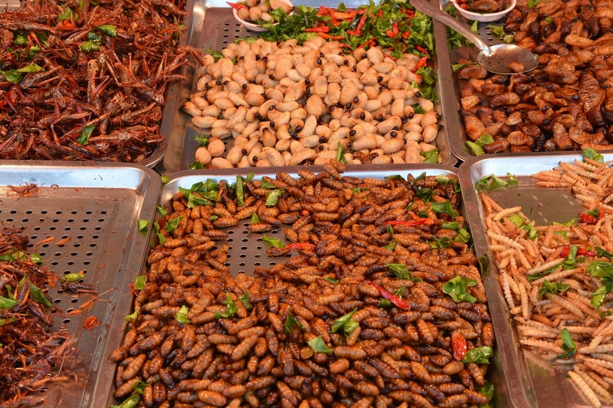
Entomophagy: Beyond whole insects, products like cricket flour, made from ground crickets, can be incorporated into various food items like protein bars, cookies, and pasta, providing a sustainable protein source.
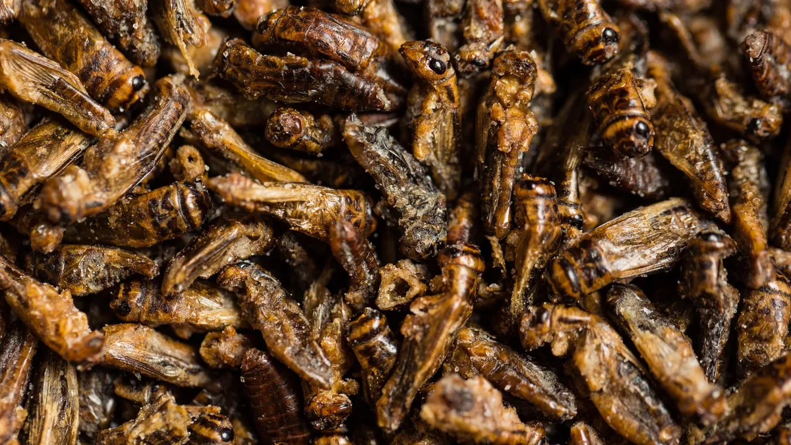
Crickets: In addition to whole insects, cricket powder or cricket flour can be used as a protein-rich ingredient in various food products like protein bars, baked goods, and pasta.
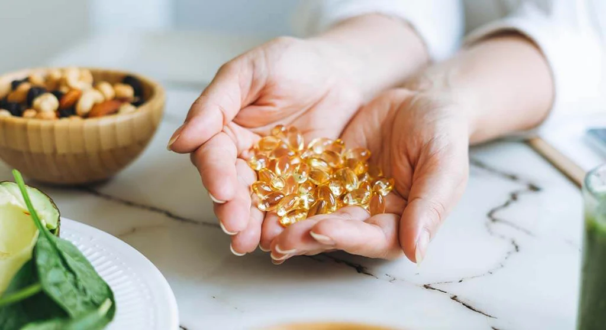
Algae Based Omega3: Algae-derived omega-3 supplements offer a plant-based alternative to traditional fish oil supplements.

Cell - Based Diary Products: Beyond meat, companies are exploring cell-based technologies to produce dairy alternatives like cheese, milk, and yogurt without the need for animal agriculture.
The protagonist, Dr. Elena Chen, a renowned scientist specializing in biotechnology, leads a team of researchers tasked with developing alternative food resources. With the support of influential figures such as Dr. Jameson Patel, a leading environmentalist, and Sophia Alvarez, a tech entrepreneur, they embark on a mission to revolutionize the global food system.
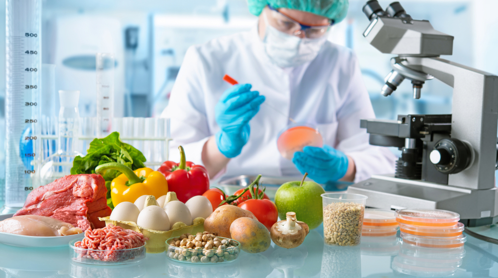